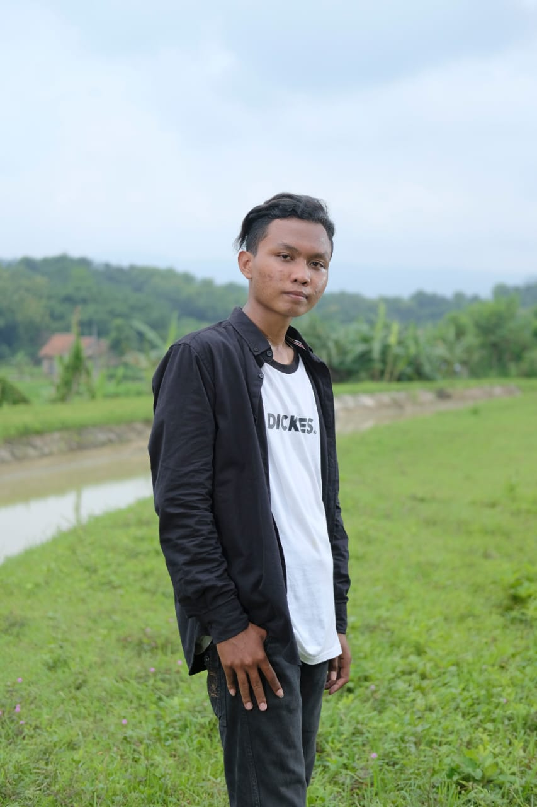

Akmal Kurniawan
Mahasiswa
Tentang Saya
Saya adalah Seorang Mahasiswa di kampus Politeknik Harapan Bersama di Kota Tegal. Dengan Program Studi Teknik Informatika. Saya juga bekerja sebagai freelancer setelah pulang dari kampus.
Keahlian
- Desain Grafis
- Gamer
- Traveling
Project
- Membuat Ulang sebuah Ui dengan menggunkan figma Figma
- Analisis perpustakaan ponpes di Tegal agar menjadi modern
Kesukaan
Saya orang yang suka Makan dan makanan kesukaan saya Bakso dan sate ayam bisa setiap hari saya memakan Bakso. Selain Suka makan saya juga suka bermain video game andorid atau pun game pc
Pengalaman Kerja
Freelancer di sebuah distributor kosmetik di Tegal
Karyawan restoran BBQ di Tegal
Freelancer di Goodproof.it
Tujuan
Saya ingin bisa membuat sebuah game pribadi sampai bisa bekerja di perusahaan game developer ternama
Info Kontak
Telp: 087887799529
Email: malkurniawan007@gmail.com
Alamat: Kota Tegal, Jawa Tengah
 LinkedIn
LinkedIn github
github Facebook
Facebook Instagram
Instagram
